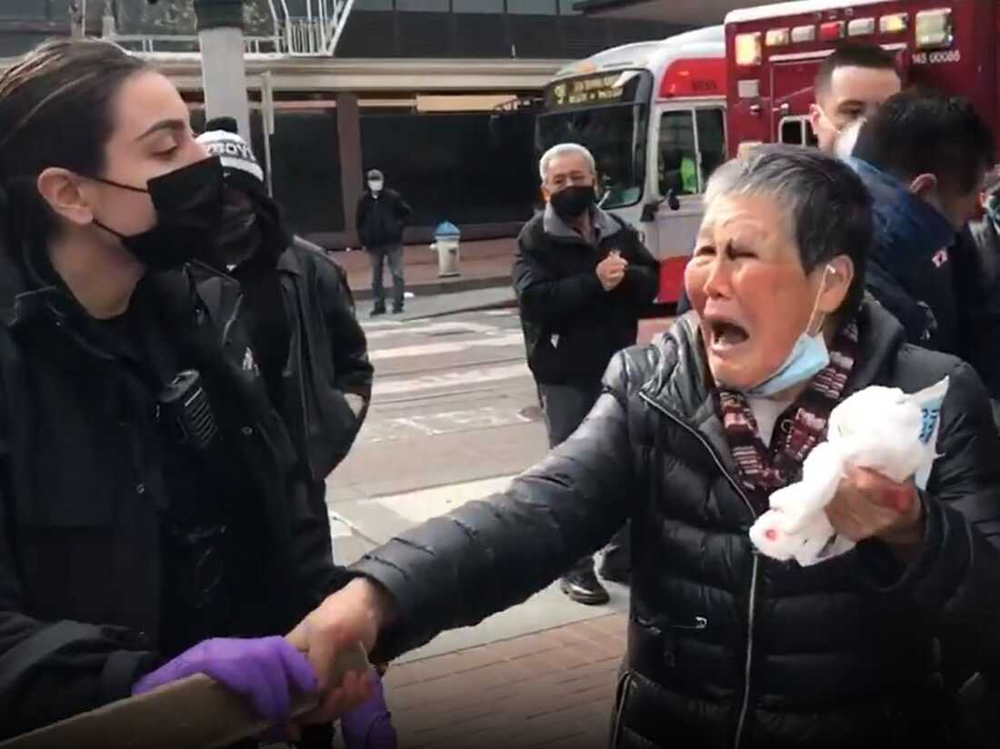
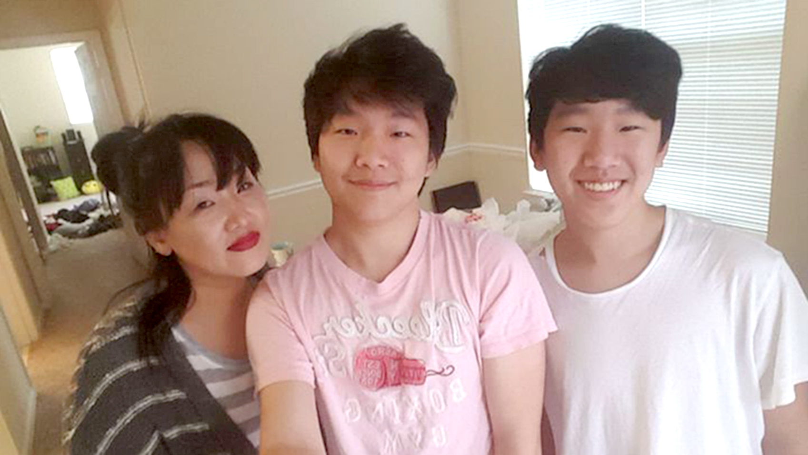

The representation of real life events affecting asians in North America
Lines 8-10:
"By shoving our elders to the curb.
Disrespecting our beliefs.
Assaulting our people and making them bleed."
Line 13:
'“Go back to your country” The infected they say.'
Line 15-16:
"Subway stations, salons, sidewalks and streets,
Where are we safe from the infected elites?"
Line 19:
'“Kung flu”, and “China Virus” echo through the chamber of thought.'
1 / 4

Asian Grandmother attacked in broad daylight
2 / 4

Asian Mother one of 8 killed in Atlanta spa shootings
3 / 4
Man pushes Asian women into incoming train.
4 / 4
Trump repeatedly calling the coronavirus, "Kung Flu" and "China Virus"
❮
❯
The dominance of white supremacist ideals and its impact on the interaction with Asians
- COVID-19 is not the first wave of anti-asian hate and racism.
- White supremacy is the notion that the white race is superior than all other races.
Stanza 9 is the representation of white supremacy.
“A byproduct of times when the light shined so bright
the light is what leads the whales to the beach.
So many whales have surrendered the sea”
- Yellow peril has always negatively impacted asians.
- Former president perpetuated this idea of Yellow Peril by saying "We can't continue to allow China
to rape our country and that's what
they're doing it's the greatest theft in
the history of the world".
The combat of racism against Asians in North American society
- Race is only a social construct.
- We cannot let it be a barrier for minorities to overcome.
Stanza 10: This toxin, humans have ingested before,
Left from all the dead carcasses washed up on shore.
- Dismantle the white supremacists ideals that brought this problem up in the first place.